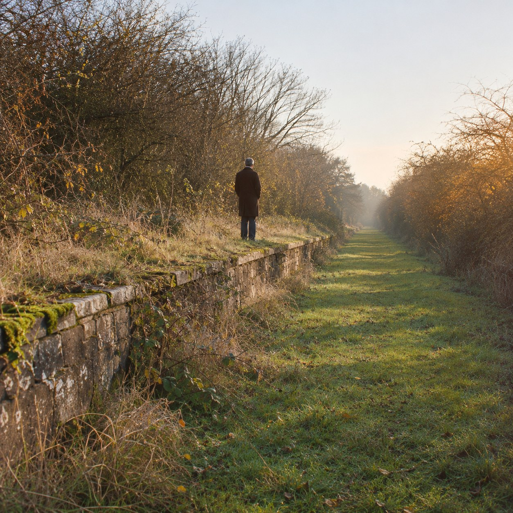
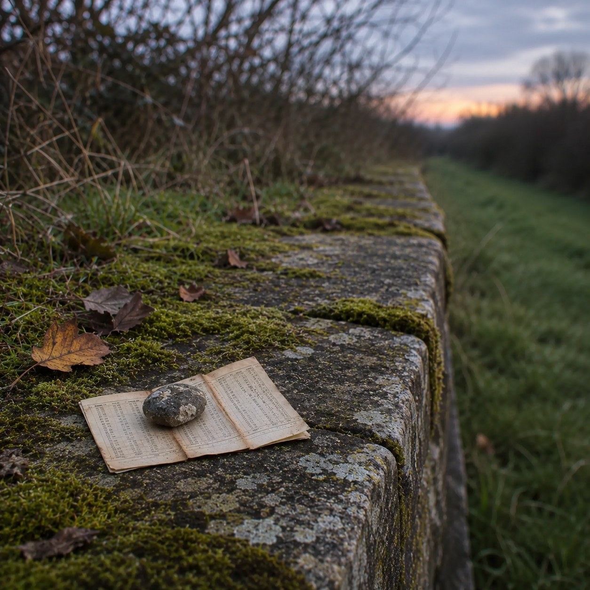

Still Due


The line closed in 1964. The rails were lifted the year after, and the track became a strip of grass between two hedges. The platform is still there, a low stone edge in the brambles. So is the last timetable, folded small, which I bought for a few coins from a man who collects them. It lists nine trains a day calling here. Nobody ever cancelled them. They were just no longer run.
A timetable is a promise made in advance to whoever happens to be waiting. When the trains stop, the promise is not taken back. It simply stops being kept, and there is no one standing there to notice.
So for one day I stood there. I was on the platform for the 7:12, and the 8:40, and every train after it until the last, at ten to seven in the evening. Nothing came. The field went on being a field. And each time the minute arrived, it felt like something.
In 1976 the group Collective Actions invited friends to an empty field of snow outside Moscow and let them wait until, far off, two figures appeared and walked toward them. The waiting was the work. The arrival only ended it. Here nothing ever ended it. Each wait was over only because the next one was due.
Edward Thomas wrote of an express that stopped one June afternoon at Adlestrop, where no one got off and no one got on. A train with no one for the station. This was a station with no one for the train, except me.
After the last one I stayed a few more minutes, in case it was running late.